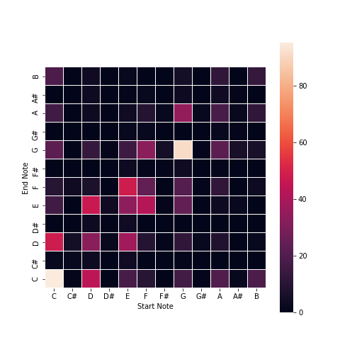
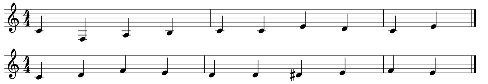

Melody
Pitch-to-Pitch Matrix
For the pitch-to-pitch matrix and chords-to-sequence data structure, we used the classified dataset. The chords generated in the previous part would then access the chord-to-sequence data structure and select a loop randomly.
We created a pitch-to-pitch matrix, sampling from the Wikifonia dataset and looking through each note transition. Since everything had been transposed to be C Major, it was easy to sanity check, looking at the provided heat map in Figure \ref{fig:pitch_to_pitch}. The range of notes used in the matrix was from C1-B7, approximately the range of a piano. We tried using this matrix to generate tunes, but found that it didn't work too well, since C->C was the most common transition.
Below is a demo of the pitch-to-pitch matrix melody generator. Try changing the random seed and length! (MuseScore is still not working in the website, sadly):
Chord-to-Pitches
We were now able to transition between pitches to other pitches based on probabilities stored within the transition matrix in a Markov model, sampled from the Wikifonia dataset, but this pitch model has no sense of harmonic context. In order to extract harmonic information, we also extract raw features from the Wikifonia dataset and process them a bit more.
In particular, because our dataset was already annotated, we use the ground truth chord harmonies when extracting. We do this by parsing down the notes in a flat manner. As we stream across the notes, we maintain the last seen chord symbol(s) to effectively identify what sequence of notes are grouped under which chord, providing us information on melodies belonging to different harmonies before each chord change.
We store the sequence of notes and keep the features for the pitches and durations found in different harmonic regions. Each region is encoded under OPTI equivalence (octave-, permutation-, transposition-, and inversion-invariance). We store the pitches found in the harmony by grabbing the pitch classes provided by the chord symbol, stored into a frozenset for hashability into a dictionary mapping. We do not use cardinality-invariance; a Cmaj7 chord may or may not contain the perfect fifth G--we simply draw the default pitch classes given by the chord symbol, regardless of the actual MIDI notes. As such, we are agnostic to inversions and different voicing, but we handle different "flavors"/"colors" of chords differently (Cmaj7 would not be equivalent to Cmaj9 due to the added pitch class). Our chord representation is therefore stripped down to the pitch classes for reconstruction later and direct matching for when we feed it into our model.
We also store a discrete-time finite impulse response filter of order 1, saving what prior chord(s) led to this current chord(s) to provide additional cadence information.
We ultimately cache these results in an Analyzer class (ASATO) that stores multiple mappings as a container for different analyses. The class allows for quick loading of the MIDI files in a directory, such as the Wikifonia dataset, caching the results and performing a key analysis provided by the music21 package to find the key of a whole piece. The mode of the piece is also stored for retaining the true tonality of a piece. We do this so that we need not recompute features of a piece, as we store mappings of pieces by title to their filenames (and vice-versa), keys, modes, and any computed features.
Once we extract load different files, we transpose the piece by forcing all pieces to the key of C and mode of Ionian. We use the given key found, and find its equivalent Ionian mode, using the difference in the two modes to transform the piece to normalize all the pieces, reducing dimensionality and maximizing feature density. We effectively derive "Roman numeral analysis" that allows us to determine, regardless of transposition, different potential melodies for different harmonies or "tensions" as provided by the chords generated by the prior subsystem: MICHAEL.
That is the preprocessing used before the chord-to-pitches feature extractor. For post-processing, we ultimately store a mapping of frozen sets of pitches (abstracting the chord) to a set of tuples of pitches (abstracting different melodies). Once derived, the Markov model can then be trained to understand potential starting notes (or even just the "popularity" of different pitches for a harmony) for the melody given certain harmonic contexts as well as what melody notes often followed given some current note state. We also derive multiple more MIDI loops/samples that can be used directly too as we improvise an arrangement. Now, when provided a key/transposition, we have base melodies that can likewise be transposed to help provide loops to improvise with, provide data to improvise bridging loops, and even improvise within loops to produce new melodies. This would tie into the prior section on pitch-to-pitch generation, allowing us to find "smooth" transitions from two different harmonies with information on the pitch we are transition from. We even have additional cadence data that can provide additional chord progression generation information in the future.
Below is a demo of our chords to melody algorithm. The chord is randomly selected, and a melody is randomly selected from the list of possible melodies for that particular chord.